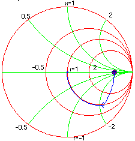

Example: Inductance and Capacitance Example: Inductance and Capacitance
Example: Inductance and Capacitance Example: Inductance and CapacitancePerhaps the most common impedance matching network used is the L- network. It consists of two elements connected in series and shunt. Invariably a capacitor and an inductor is used in R.F. designs.
Problem: Design an L network to match a pure resistance of 500 ohms to 50 ohms at operating frequency of 100 MHz.
Solution: Since our goal is to match a 500 ohms termination to 50 ohms. We start with assigning the load resistance to 500 ohms. Next a shunt capacitance of 0 pf is placed across the termination. The capacitance is increased until the real part of Z-in is 50 ohms this happens when the 50 ohms constant R-circle is reached. The next task is to cancel or "tune out" the reactive part, which is done by adding a series inductor and increasing its value until the center of the chart is reached. The same is illustrated in the figure below with a blue trace.
If the designer chooses to, the above match could also be done with shunt L and series C which will also decouple the DC.
Note: The step size can be changed by double clicking on the corresponding number.

Load = 500 ohms
Shunt C3 = 9.5 pf
Series L4 = 240 nh